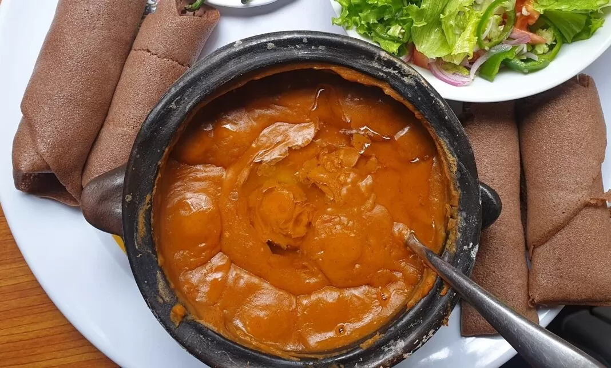
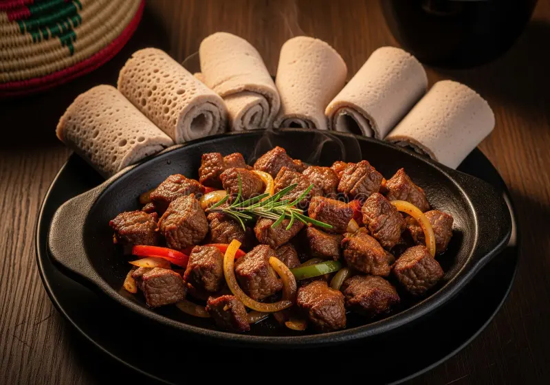

Doro Wat

Doro Wat is Ethiopia's famous spicy chicken stew served with injera.
Welcome! Explore traditional Ethiopian recipes and learn how to prepare them.
Doro Wat is Ethiopia's famous spicy chicken stew served with injera.

Shiro is a delicious chickpea stew enjoyed throughout Ethiopia.

Tibs is made with beef or lamb cooked with onions, peppers, and Ethiopian spices.